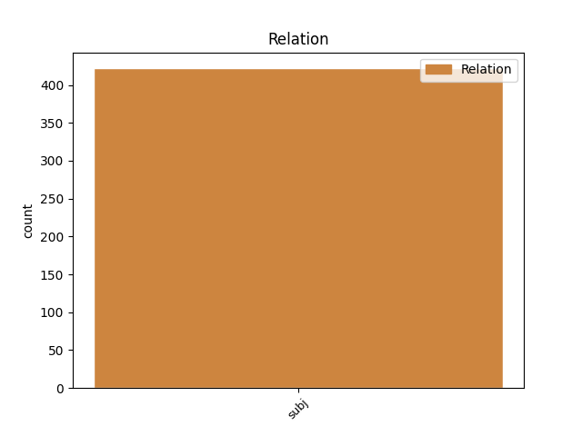
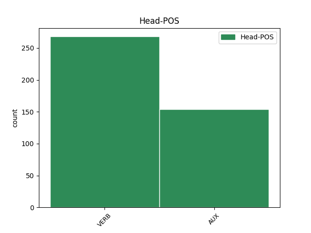
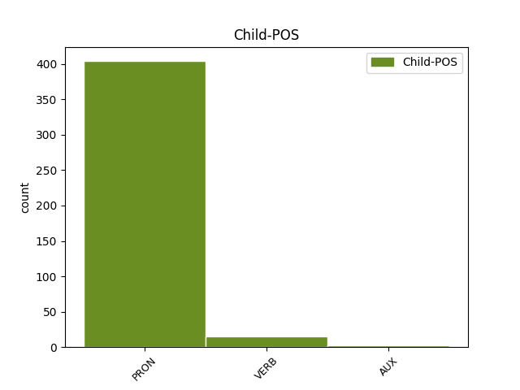

Distribution of features within this leaf



Agreement Rules sorted by frequency.
- When the dependent token is the subject(subj) of the head token, and the dependent token is PRON.
1 " _ _ _ _ 0 _ _ _
2 Ty ty PRON PP-S1--2------- Case=Nom|Number=Sing|Person=2|PronType=Prs 3 subj _ _
3 víš vědět VERB VB-S---2P-AA--- Mood=Ind|Number=Sing|Person=2|Polarity=Pos|Tense=Pres|VerbForm=Fin|Voice=Act 0 _ _ _
4 , _ _ _ _ 0 _ _ _
5 že _ _ _ _ 0 _ _ _
6 neumím _ _ _ _ 0 _ _ _
7 plavat _ _ _ _ 0 _ _ _
8 . _ _ _ _ 0 _ _ _
1 Co _ _ _ _ 0 _ _ _
2 on _ _ _ _ 0 _ _ _
3 považuje považovat VERB VB-S---3P-AA--- Mood=Ind|Number=Sing|Person=3|Polarity=Pos|Tense=Pres|VerbForm=Fin|Voice=Act 8 subj _ _
4 za _ _ _ _ 0 _ _ _
5 vodu _ _ _ _ 0 _ _ _
6 ráje _ _ _ _ 0 _ _ _
7 , _ _ _ _ 0 _ _ _
8 je být AUX VB-S---3P-AA--- Mood=Ind|Number=Sing|Person=3|Polarity=Pos|Tense=Pres|VerbForm=Fin|Voice=Act 0 _ _ _
9 pro _ _ _ _ 0 _ _ _
10 nás _ _ _ _ 0 _ _ _
11 nechutná _ _ _ _ 0 _ _ _
12 břečka _ _ _ _ 0 _ _ _
13 . _ _ _ _ 0 _ _ _
1 " _ _ _ _ 0 _ _ _
2 Kdo _ _ _ _ 0 _ _ _
3 je být AUX VB-S---3P-AA--- Mood=Ind|Number=Sing|Person=3|Polarity=Pos|Tense=Pres|VerbForm=Fin|Voice=Act 12 subj _ _
4 tak _ _ _ _ 0 _ _ _
5 bohatý _ _ _ _ 0 _ _ _
6 , _ _ _ _ 0 _ _ _
7 že _ _ _ _ 0 _ _ _
8 má _ _ _ _ 0 _ _ _
9 vlastní _ _ _ _ 0 _ _ _
10 studnu _ _ _ _ 0 _ _ _
11 , _ _ _ _ 0 _ _ _
12 má mít VERB VB-S---3P-AA--- Mood=Ind|Number=Sing|Person=3|Polarity=Pos|Tense=Pres|VerbForm=Fin|Voice=Act 0 _ _ _
13 nejlepší _ _ _ _ 0 _ _ _
14 vodu _ _ _ _ 0 _ _ _
15 a _ _ _ _ 0 _ _ _
16 určitě _ _ _ _ 0 _ _ _
17 nezná _ _ _ _ 0 _ _ _
18 žádné _ _ _ _ 0 _ _ _
19 utrpení _ _ _ _ 0 _ _ _
20 , _ _ _ _ 0 _ _ _
21 " _ _ _ _ 0 _ _ _
22 pomyslela _ _ _ _ 0 _ _ _
23 si _ _ _ _ 0 _ _ _
24 . _ _ _ _ 0 _ _ _
Disagree Examples:
1 Ale _ _ _ _ 0 _ _ _
2 jen _ _ _ _ 0 _ _ _
3 na _ _ _ _ 0 _ _ _
4 nás _ _ _ _ 0 _ _ _
5 záleží záležet VERB VB-S---3P-AA--- Mood=Ind|Number=Sing|Person=3|Polarity=Pos|Tense=Pres|VerbForm=Fin|Voice=Act 0 _ _ _
6 , _ _ _ _ 0 _ _ _
7 jak _ _ _ _ 0 _ _ _
8 rychle _ _ _ _ 0 _ _ _
9 a _ _ _ _ 0 _ _ _
10 v _ _ _ _ 0 _ _ _
11 jaké _ _ _ _ 0 _ _ _
12 míře _ _ _ _ 0 _ _ _
13 ztratíme ztratit VERB VB-P---1P-AA--- Mood=Ind|Number=Plur|Person=1|Polarity=Pos|Tense=Pres|VerbForm=Fin|Voice=Act 5 subj _ _
14 jejich _ _ _ _ 0 _ _ _
15 nádhernou _ _ _ _ 0 _ _ _
16 důvěru _ _ _ _ 0 _ _ _
17 , _ _ _ _ 0 _ _ _
18 jak _ _ _ _ 0 _ _ _
19 ji _ _ _ _ 0 _ _ _
20 ztratíme _ _ _ _ 0 _ _ _
21 nedostatkem _ _ _ _ 0 _ _ _
22 času _ _ _ _ 0 _ _ _
23 pro _ _ _ _ 0 _ _ _
24 ně _ _ _ _ 0 _ _ _
25 , _ _ _ _ 0 _ _ _
26 nedostatkem _ _ _ _ 0 _ _ _
27 porozumění _ _ _ _ 0 _ _ _
28 nebo _ _ _ _ 0 _ _ _
29 prostě _ _ _ _ 0 _ _ _
30 jen _ _ _ _ 0 _ _ _
31 nepozorností _ _ _ _ 0 _ _ _
32 ve _ _ _ _ 0 _ _ _
33 zvlášť _ _ _ _ 0 _ _ _
34 důležitých _ _ _ _ 0 _ _ _
35 chvílích _ _ _ _ 0 _ _ _
36 . _ _ _ _ 0 _ _ _
1 Při _ _ _ _ 0 _ _ _
2 pohledu _ _ _ _ 0 _ _ _
3 zpět _ _ _ _ 0 _ _ _
4 mi _ _ _ _ 0 _ _ _
5 není být AUX VB-S---3P-NA--- Mood=Ind|Number=Sing|Person=3|Polarity=Neg|Tense=Pres|VerbForm=Fin|Voice=Act 0 _ _ _
6 jasné _ _ _ _ 0 _ _ _
7 , _ _ _ _ 0 _ _ _
8 jak _ _ _ _ 0 _ _ _
9 jsme být AUX VB-P---1P-AA--- Mood=Ind|Number=Plur|Person=1|Polarity=Pos|Tense=Pres|VerbForm=Fin|Voice=Act 5 subj _ _
10 to _ _ _ _ 0 _ _ _
11 dokázali _ _ _ _ 0 _ _ _
12 , _ _ _ _ 0 _ _ _
13 jenom _ _ _ _ 0 _ _ _
14 vím _ _ _ _ 0 _ _ _
15 , _ _ _ _ 0 _ _ _
16 že _ _ _ _ 0 _ _ _
17 jsme _ _ _ _ 0 _ _ _
18 museli _ _ _ _ 0 _ _ _
19 ukrást _ _ _ _ 0 _ _ _
20 nějaké _ _ _ _ 0 _ _ _
21 povolovací _ _ _ _ 0 _ _ _
22 formuláře _ _ _ _ 0 _ _ _
23 z _ _ _ _ 0 _ _ _
24 obvodního _ _ _ _ 0 _ _ _
25 kulturního _ _ _ _ 0 _ _ _
26 střediska _ _ _ _ 0 _ _ _
27 , _ _ _ _ 0 _ _ _
28 zfalšovat _ _ _ _ 0 _ _ _
29 pár _ _ _ _ 0 _ _ _
30 razítek _ _ _ _ 0 _ _ _
31 a _ _ _ _ 0 _ _ _
32 podpisů _ _ _ _ 0 _ _ _
33 , _ _ _ _ 0 _ _ _
34 a _ _ _ _ 0 _ _ _
35 dokonce _ _ _ _ 0 _ _ _
36 jsme _ _ _ _ 0 _ _ _
37 i _ _ _ _ 0 _ _ _
38 podplatili _ _ _ _ 0 _ _ _
39 vylepovače _ _ _ _ 0 _ _ _
40 plakátů _ _ _ _ 0 _ _ _
41 , _ _ _ _ 0 _ _ _
42 aby _ _ _ _ 0 _ _ _
43 by _ _ _ _ 0 _ _ _
44 nás _ _ _ _ 0 _ _ _
45 nalepili _ _ _ _ 0 _ _ _
46 před _ _ _ _ 0 _ _ _
47 program _ _ _ _ 0 _ _ _
48 Národního _ _ _ _ 0 _ _ _
49 divadla _ _ _ _ 0 _ _ _
50 . _ _ _ _ 0 _ _ _
1 " _ _ _ _ 0 _ _ _
2 Ale _ _ _ _ 0 _ _ _
3 co _ _ _ _ 0 _ _ _
4 působím působit VERB VB-S---1P-AA--- Mood=Ind|Number=Sing|Person=1|Polarity=Pos|Tense=Pres|VerbForm=Fin|Voice=Act 8 subj _ _
5 bezděčně _ _ _ _ 0 _ _ _
6 , _ _ _ _ 0 _ _ _
7 mě _ _ _ _ 0 _ _ _
8 nezajímá zajímat VERB VB-S---3P-NA--- Mood=Ind|Number=Sing|Person=3|Polarity=Neg|Tense=Pres|VerbForm=Fin|Voice=Act 0 _ _ _
9 , _ _ _ _ 0 _ _ _
10 protože _ _ _ _ 0 _ _ _
11 je _ _ _ _ 0 _ _ _
12 to _ _ _ _ 0 _ _ _
13 mimo _ _ _ _ 0 _ _ _
14 můj _ _ _ _ 0 _ _ _
15 vliv _ _ _ _ 0 _ _ _
16 , _ _ _ _ 0 _ _ _
17 a _ _ _ _ 0 _ _ _
18 proto _ _ _ _ 0 _ _ _
19 taky _ _ _ _ 0 _ _ _
20 mimo _ _ _ _ 0 _ _ _
21 mou _ _ _ _ 0 _ _ _
22 odpovědnost _ _ _ _ 0 _ _ _
23 . _ _ _ _ 0 _ _ _
24 " _ _ _ _ 0 _ _ _
1 " _ _ _ _ 0 _ _ _
2 Je být AUX VB-S---3P-AA--- Mood=Ind|Number=Sing|Person=3|Polarity=Pos|Tense=Pres|VerbForm=Fin|Voice=Act 0 _ _ _
3 tvoje _ _ _ _ 0 _ _ _
4 věc _ _ _ _ 0 _ _ _
5 , _ _ _ _ 0 _ _ _
6 s _ _ _ _ 0 _ _ _
7 kým _ _ _ _ 0 _ _ _
8 spíš spát VERB VB-S---2P-AA--- Mood=Ind|Number=Sing|Person=2|Polarity=Pos|Tense=Pres|VerbForm=Fin|Voice=Act 2 subj _ SpaceAfter=No
9 . _ _ _ _ 0 _ _ _
1 " _ _ _ _ 0 _ _ _
2 Je být AUX VB-S---3P-AA--- Mood=Ind|Number=Sing|Person=3|Polarity=Pos|Tense=Pres|VerbForm=Fin|Voice=Act 0 _ _ _
3 mi _ _ _ _ 0 _ _ _
4 celkem _ _ _ _ 0 _ _ _
5 jedno _ _ _ _ 0 _ _ _
6 kudy _ _ _ _ 0 _ _ _
7 pojedu jet VERB VB-S---1F-AA--- Mood=Ind|Number=Sing|Person=1|Polarity=Pos|Tense=Fut|VerbForm=Fin|Voice=Act 2 subj _ SpaceAfter=No
8 . _ _ _ _ 0 _ _ _